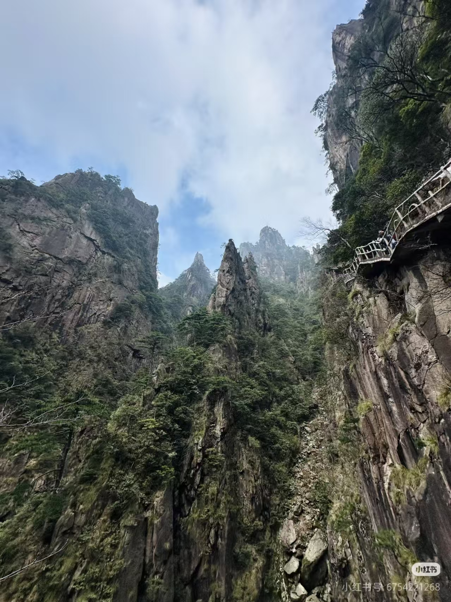
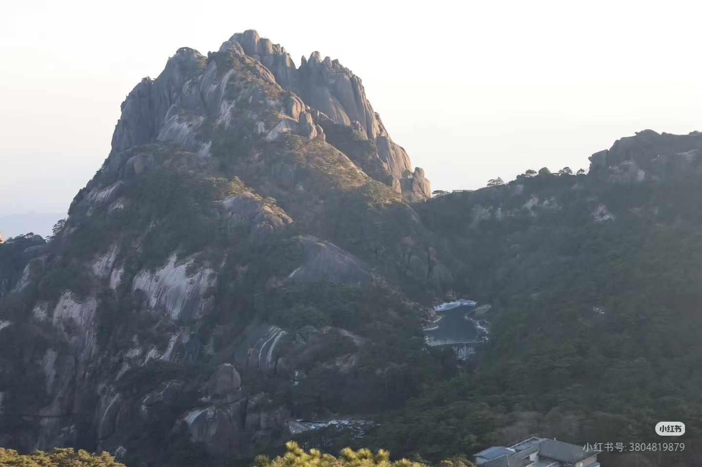
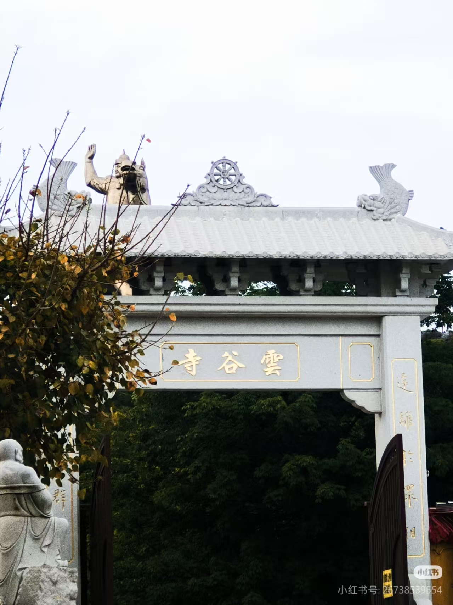

🌲 迎客松
位于玉屏楼左侧、文殊洞之上，树高10.2米，胸围0.66米，树龄至少已有800年。一侧枝干伸出，如人伸出臂膀欢迎远道而来的客人，另一只手优雅地斜插在裤兜里，雍容大度，姿态优美。迎客松是黄山的标志性景观，也是中国人民热情友好的象征。
📍 玉屏景区🎫 含在景区门票🕐 全天开放
位于玉屏楼左侧、文殊洞之上，树高10.2米，胸围0.66米，树龄至少已有800年。一侧枝干伸出，如人伸出臂膀欢迎远道而来的客人，另一只手优雅地斜插在裤兜里，雍容大度，姿态优美。迎客松是黄山的标志性景观，也是中国人民热情友好的象征。

黄山第一高峰，海拔1864.8米。因主峰突兀，小峰簇拥，俨若新莲初开，仰天怒放，故名"莲花峰"。登临峰顶，如置身云霄，云天一色，江河一线，俱在远眺之中。绝顶处方圆丈余，名曰"石船"，中有一池一称"香沙池"。

因谷中有白云溪，又称"白云谷"。此谷由近旁的石柱峰、石床峰，右前方的薄刀峰、飞来石，对岸的排云亭、丹霞峰等围成。峡谷内千峰竞秀，万壑纵横，怪石嶙峋，栈道悬于绝壁之上，步步惊心，被游人称为"梦幻景区"。

黄山第二高峰，海拔1860米。顶上平坦高旷，面积约6万平方米，视野开阔，日光充足，故名"光明顶"。这里是黄山看日出、观云海的最佳地点之一。顶上建有华东地区海拔最高的黄山气象站，被誉为"黄山之眼"。
点击景点查看详情，探索黄山游览路线
黄山处处是风景，步步皆画卷

古称"群仙所都"，意为天上都会。海拔1810米，险峻雄奇，鲫鱼背为最险处，宽仅1米。

高12米，重约360吨，底部与山体接触面积很小，似从天外飞来。87版《红楼梦》片头取景地。

黄山后山索道起点，周边古树参天，环境清幽。是徒步登山的经典起点之一。